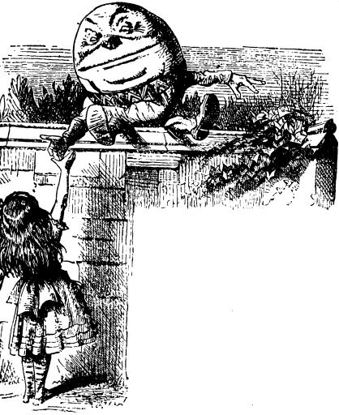
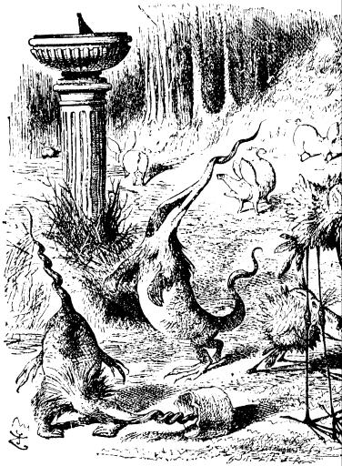
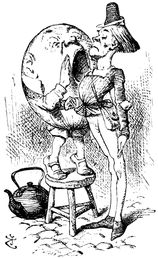
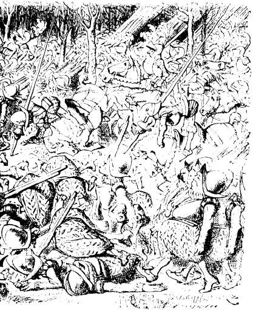
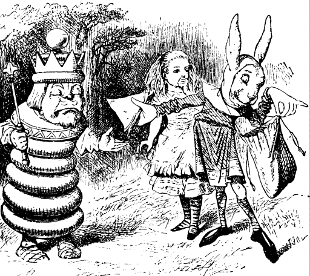

THE next moment soldiers came running through the wood, at first in twos and threes, then ten or twenty together, and at last in such crowds that they seemed to fill the whole forest. Alice got behind a tree, for fear of being run over, and watched them go by.
She thought that in all her life she had never seen soldiers so uncertain on their feet: they were always tripping over something or other, and whenever one went down, several more always fell over him, so that the ground was soon covered with little heaps of men.
Then came the horses. Having four feet, these managed rather better than the foot-soldiers: but even they stumbled now and then; and it seemed to be a regular rule that, whenever a horse stumbled, the rider fell off instantly. The confusion got worse every moment, and Alice was very glad to get into an open place, where she found the White King seated on the ground, busily writing in his memorandum-book.

"I've sent them all!" the King cried in a tone of delight, on seeing Alice. "Did you happen to meet any soldiers, my dear, as you came through the wood?"
"Yes, I did," said Alice: "several thousand, I should think."
"Four thousand two hundred and seven, that's the exact number," the King said, referring to his book. "I couldn't send all the horses, you know, because two of them are wanted in the game. And I haven't sent the two Messengers, either. They've both gone to the town. Just look along the road, and tell me if you can see either of them."
"I see nobody on the road," said Alice.
"I only wish I had such eyes," the King remarked in a fretful tone. "To be able to see N obody! And at that distance too! Why, it's as much as I can do to see real people, by this light!"
All this was lost on Alice, who was still looking intently along the road, shading her eyes with one hand. "I see somebody now!" she exclaimed at last. "But he's coming very slowly--and what curious attitudes he goes into!" (For the M essenger kept skipping up and down, and wriggling like an eel, as he came along, with his great hands spread out like fans on each side.)
"Not at all," said the King. "He's an Anlo-Saxon Messenger--and those are Anglo-Saxon attitudes. He only does them when he's happy. His name is Haigha." (He pronounced it so as to rhyme with "mayor.")
"I love my love wih an H," Alice couldn't help beginning, "because he is Happy. I hate him with an H, because he is Hideous. I fed him wit-- hwith--with Ham-sandwiches and Hay. His name is Haigha, and he lives---"
"He lives on the Hill," the King remarked simply, without the least idea that he was joining in the game, while Alice was still hesitating for the name of a town beginning with H. "The other Messenger's called Hatta. I must have two, you know--to come and go. One to come, and one to go."
"I beg your pardon?" said Alice.
"It isn't respectable to beg," said the King.
"I only meant that I didn't understand," said Alice. "Why one to come and one to go?"
"Don't I tell you?" the King repeated impatiently. "I must have two--to fetch and carry. One to fetch, and one to carry."
At this moment the Messenger arrived: he was far too much out of breath to say a word, and could only wave his hands about, and make the most fearful faces at the poor King.
"This young lady loves you with an H," the King said, introducing Alice in the hope of turning off the Messenger's attention from himself--but It was no use--the Anglo-Saxon attitudes only got more extraordinary every moment, while the great eyes rolled wildly from side to side.
"You alarm me!" said the King. "I feel faint--- give me a ham sandwich!"
On which the Messenger, to Alice's great amusement, opened a bag that hung round his neck, and handed a sandwich to the King, who devoured it greedily.
"Another sandwich!" said the King.
"There's nothing but hay left now," the M essenger said, peeping into the bag.
"Hay, then," the King faintly murmured.
Alice was glad to see that it revived him a good deal.
"There's nothing like eating hay when you're faint," he remarked to her, as he munched away.
"I should think throwing cold water over you would be better," Alice suggested: "---or some salvolatile."
"I didn't say there was nothing better," the King replied. "I said there was nothing like it." Which Alice did not venture to deny.
"Who did you pass on the road?" the King went on, holding out his hand to the Messenger for some more hay.

"Nobody," said the Messenger.
"Quite right," said the King: "this young lady saw him too. So of course Nobody walks slower than you.
"I do my best," the Messenger said in a sullen tone. "I'm sure nobody walks much faster than I do!"
"He can't do that," said the King, "or else he'd have been here first. However, now you've got your breath, you may tell us what's happened in the town."
"I'll whisper it," said the Messenger, putting his hands to his mouth in the shape of a trumpet and stooping so as to get close to the King's ear. Alice was sorry for this, as she wanted to hear the news too- However, instead of whispering, he simply shouted at the top of his voice. "They're at it again!"
"Do you call that a whisper!" cried the poor King, jumping up and shaking himself. "If you do such a thing again I'll have you buttered! It went through and through my head like an earthquake!"
"It would have to be a very tiny earthquake!" thought Alice. "Who are at it again?" she ventured
"Why the Lion and the Unicorn of course,"
"Fighting for the crown?
"Yes, to be sure," said the King; "and the best of the joke is, that it's my crown all the while! Let's run and see them." And they trotted off, Alice repeating to herself, as she ran, the words of the old song:---
The Lion and the Unicorn were fighting for the crown: The Lion beat the Unicorn all round the town. Some gave them white bread and some gave them brown: Some gave them plum-cake and drummed them out of town.
"Does--the one--that wins--get the crown?" she asked, as well as she could, for the long run was putting her quite out of breath.
"Dear me, no!" said the King. "What an idea!"
"Would you--be good enough---" Alice panted out, after running a little further, "to stop a minute--just to get--one's -breath again?"
"I'm good enough," the King said, "only I'm not strong enough. You see, a minute goes by so fearfully quick. You might as well try to stop a B andersnatch!"
Alice had no more breath for talking, so they trotted on in silence, till they came in sight of a great crowd, in the middle of which the Lion and Unicorn were fighting. They were in such a cloud of dust, that at first Alice could not make out which was which: but she soon managed to distinguish the Unicorn by his horn.
They placed themselves close to where Hatta, the other Messenger, was standing watching the fight, with a cup of tea in one hand and a piece of bread and butter in the other.
"He's only just out of prison, and he hadn't finished his tea when he was sent in," Haigha whispered to Alice: "and they only give them oystershells in there--so you see he's very hungry and thirsty. How are you, dear child?" he went on, putting his arm affectionately round Hatta's neck.
Hatta looked round and nodded, and went on with his bread-and-butter.
"Were you happy in prison, dear child?" said Haigha.
Hatta looked round once more, and this time a tear or two trickled down his cheek: but not a word
"Speak, can't you!" Haigha cried imp
"Speak, won't you!" cried the King. "How are they getting on with the fight?"
Hatta made a desperate effort, and swallowed a large piece of bread-and-butter. "They're getting on very well," he said in a choking voice: "each of them has been down about eighty-seven times."
"Then I suppose they'll soon bring the white "bread and the brown?" Alice ventured to remark.
"It's waiting for 'em now," said Hatta: "this is a bit of it as I'm eating."
There was a pause in the fight just then, and the Lion and the Unicorn sat down, panting, while the King called out "Ten minutes allowed for refreshments!" Haigha and Hatta set to work at once, carrying round trays of white and brown bread. Alice took a piece to taste, but it was very dry.
"I don't think they'll fight any more to-day," the King said to Hatta: "go and order the drums to begin." And Hatta went bounding away like a grasshopper.
For a minute or two Alice stood silently watching him. suddenlyshe brightened up look, look!" she cried, pointing eagerly. "There's the White Queen running across the country! She came flying out of the wood over yonder--how fast those Queens can run!"
"There's some enemy after her, no doubt," the King said, without even looking round. "That wood's full of them."
"But aren't you going to run and help her?" Alice asked, very much surprised at his taking it so quietly.

"No use, no use!" said the King. "She runs so fearfully quick. You might as well try to catch a Bandersnatch! But I'll make a memorandum about her, if you like--she's a dear good creature," he repeated softly to himself, as he opened his memo-randum-book. "Do you spell `creature' with a double `e'?"
At this moment the Unicorn sauntered by them, with his hands in his pockets. "I had the best of it this time!" he said to the King, just glancing at him as he passed,
"A little--a little," the King replied, rather nervously. "You shouldn't have run him through with your horn, you know."
"It didn't hurt him" the Unicorn said carelessly, and he was going on, when his eye happened to fall upon Alice: he turned round instantly, and stood for some time looking at her with an air of the deepest disgust
"What--is--this?" he said at last.
"This is a child!" Haigha replied eagerly, coming in front of Alice to introduce her, and spreading out both his hands towards her in an Anglo-Saxon attitude. "We only found it to-day. It's as large as life, and twice as natural!"
"I always thought they were fabulous monsters!" said the Unicorn. "Is it alive?"
"It can talk," said Haigha, solemnly.
The unicorn looked dreamily at Alice, and said, child."
Alice could not help her lips curling up into a smile as she began: "Do you know, I always, thought Unicorns were fabulous monsters, too! I never saw one alive before!"
"Well, now that we have seen each other: said The Unicorn,"if you'll believe in me, I'll believe in you. Is that a bargain?
"Yes, if you like," said Alice.
"Come, fetch out the plum-cake, old man!" the Unicorn went on, turning from her to the King. "None of your brown bread for me!"
"Certainly -- certainly!" the King muttered, and beckoned to Haigha. "Open the bag!" he whispered. "Quick! Not that one--that's full of hay!"
Haigha took a large cake out of the bag, and gave it to Alice to hold, while he got out a dish and carv-ing-knife. How they all came out of it Alice couldn't guess. It was just like a conjuring trick, she thought.

The Lion had joined them while this was going on: he looked very tired and sleepy, and his eyes were half shut. "What's this?" he said, blinking lazily at Alice, and speaking in a deep hollow tone that sounded like the tolling of a great bell.
"Ah, what is it, now ?" the Unicorn cried eagerly, "You'll never guess! I couldn't."
The Lion looked at Alice wearily. "Are you animal--or vegetable--or mineral?" he said, yawning at every other word
"It's a fabulous monster!" the Unicorn cried out, before Alice could reply.
"Then hand round the plum-cake, Monster," the Lion said, lying down and putting his chin on his paws. "And sit down, both of you" (to the King and the Unicorn): "fair play with the cake, you know!"
The King was evidently very uncomfortable at having to sit down between the two great creatures; but there was no other place for him.
"What a fight we might have for the crown, now!" the Unicorn said, looking slyly up at the crown, which the poor King was nearly shakin off his head, he trembled so much.
"I should win easy," said the Lion.
"I'm not so sure of that," said the Unicorn.
"Why, I beat you all round the town, you chicken!" the Lion replied angrily, half getting up as he spoke.
Here the king interupted, to prevent the quarrel going on: he was very nervous, and his voice quite quivered. "Ali round the town?" he said. "That's a good long way. Did you go by the old bridge, or the market-place? You get the best view by the old bridge."
"I'm sure I don't know the Lion growled out as he lay down again. "There was too much dust to see anything. What a time the Monster is, cutting up that cake!"
Alice had seated herself on the bank of a little brook, with the great dish on her knees, and was sawinf away diligently with the knife. "It's very provoking!" she said, in reply to the Lion (she was getting quite used to being called "the Monster )" "I've cut off several slices already, but they always join on again!"
"You don't know how to manage Looking-glass cakes," the Unicorn remarked. "Hand it round first, and cut it afterwards."
This sounded nonsense, but Alice very obediently got up, and carried the dish round, and the cake divided itself into three pieces as she did so. "Now cut it up," said the Lion, as she returned to her place with the empty dish.
"I say, this isn't fair!" cried the Unicorn, as Alice sat with the knife in her hand, very much puzzled how to begin. "The Monster has given the Lion twice as much as me!"
"She's kept none for herself, anyhow," said the But before Alice could answer him the drums began.

Where the noise came from, she couldn't make out: the air seemed full of it, and it rang through She started to her feet, and sprang across the little brook in her terror, and had just time to see the Lion and the Unicorn rise to their feet, with angry looks at being interrupted in their feast, before she dropped to her knees and put her hands over her ears, vainly trying to shut out the dreadful uproar.
"If that doesn't `drum them out of town,' " she thought to herself, "nothing ever will!"